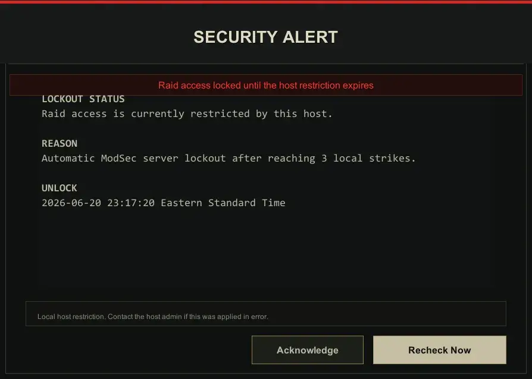
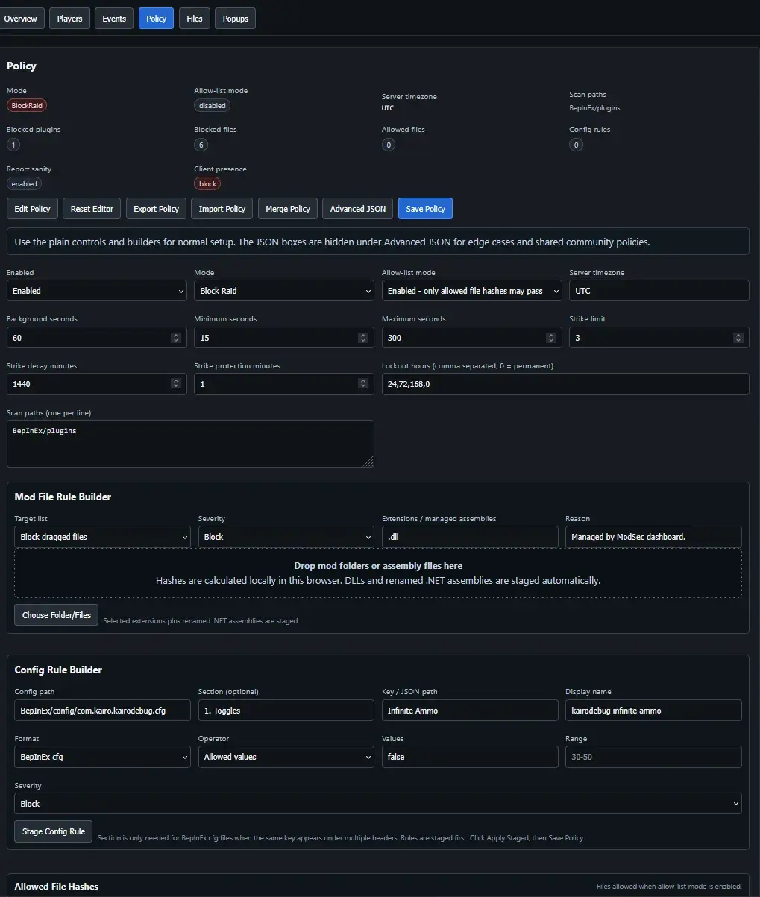
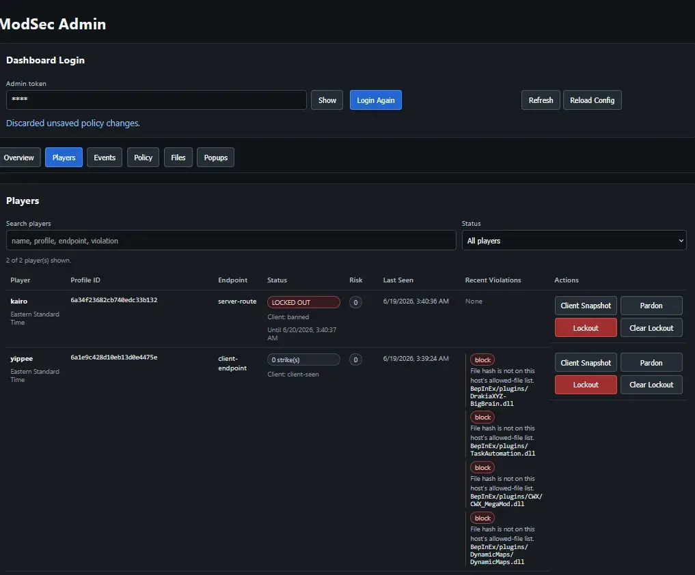
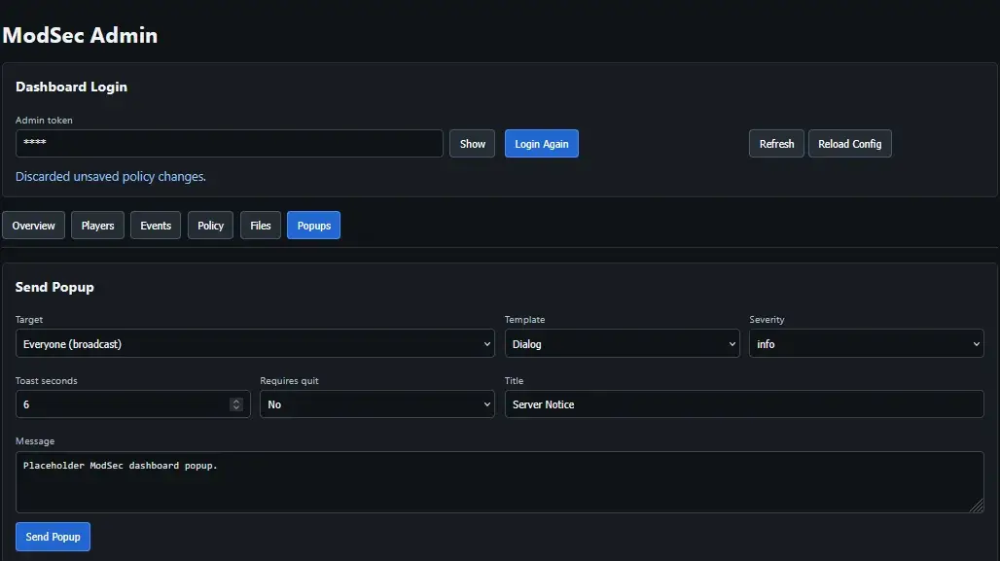

ModSec: Server Rule Enforcement
- Downloads
- 125
- Favourites
- 3
- Mod lists
- 1
ModSec is a server rule enforcement mod for SPT/Fika servers when your friends are mostly trustworthy… you know, just in case. :)
It checks each client’s SPT mod/config setup against rules chosen by the server host, then warns, blocks raid access, issues local strikes, or applies a local server lockout depending on your config. It is not an official SPT anti cheat, it does not talk to Forge, and it does not pretend to be the police. It is more like a bouncer for your private server who reads hashes instead of vibes.
Go protect your raids, king.
Note: This mod is still pretty fresh, even though its been tested and should behave (I hope), there may be a few bugs.

ModSec helps server hosts enforce private server rules for client mods and config values.
Stuff it can do:
- Require players to have the ModSec BepInEx client plugin installed before entering raid.
- Block or warn on specific BepInEx plugin GUIDs.
- Block/allow files by SHA256 hash (renaming won’t save you, smart guy)
- Run allow list only mode so only approved client assemblies are allowed.
- Check selected
.cfgor.jsonconfig values. - Block raid start/join routes when the current profile is on timeout. :(
- Live checks without restarting the game.
- Apply local strikes with configurable cooldown/decay.
- Apply local server lockouts after too many strikes.
- Detect out-of-policy raid settings and run those raids as non-persistent test raids.
- Show in game dialogs and toast notifications.
- Let admins send live popups/toasts to one player or everyone.
- Safely extract other Fika players when a restricted raid host is removed.
- Send configurable “Hall of Shame” in game messages through the SPT dialogue system.
- Provide an admin dashboard for players, events, policy editing, file hashes, popups, imports, exports, and diagnostics.
The default setup is allow list mode; only approved client plugin assemblies are allowed, and anything else can block raid access until the host approves it.
What ModSec is
- Host rule enforcement
- Raid access protection
- Local server restrictions
- SPT folder integrity checks
What ModSec is NOT
- Global anti cheat
- SPT/Forge moderation
- A cheater database
- Whole computer scanning
- Install the server mod into:
`SPT/user/mods/modSec`
- Install the client plugin into every player’s game:
`BepInEx/plugins/modSec/modSec.dll`
-
Start the SPT server.
-
Open the dashboard:
http://127.0.0.1:6969/modsec/admin/dashboard
- Log in with the dashboard token from:
`SPT/user/mods/modSec/config/modsec.json`
- Change the token before running a real server!
Each player needs the client plugin. If a player reaches raid routes without the ModSec client reporting for that game launch, ModSec can block raid access for that player only.
ModSec is designed to stay local and boring on purpose.
By default, ModSec:
- Scans only SPT related folders.
- Requires client consent before sending scan reports.
- Uses a random ModSec Install ID.
- Does not collect/scan hardware IDs, names, or folders/files outside of your SPT install.
- Does not upload data to Forge, SPT, or third party servers.
- Does not delete, quarantine, rename, or edit client files.
After a player accepts the host disclosure, the client may send:
- SPT profile ID and profile nickname.
- Random ModSec Install ID.
- ModSec client version.
- BepInEx plugin GUID, name, version, and SPT location.
- SPT related file paths, SHA256 hashes, file sizes, and timestamps for configured scan folders.
- Selected config rule results only, such as rule ID, relative config path, key, found status, and value.
Host admins with the dashboard token/session can view this data. Anyone with access to the host computer’s ModSec JSON files can also view it because it is stored locally under the server mod config folder.
Players can reset or change consent in:
ModSec_Data/consent.json
Consent changes require a game restart to take effect before joining raids.
Edit:
`SPT/user/mods/modSec/config/modsec.json`
You can also use the dashboard Policy page if JSON makes your eyes glaze over.

Important options:
- enabled: Turns ModSec on/off.
- mode: Turns ModSec on/off.
- strictWhitelist: Allow list mode. Only approved client assembly hashes are allowed. Default is
true. - strikelimit: Number of local strikes before server lockout.
- cooldownMinutes: Time before the same unresolved issue can add another strike.
- autoBlockDurationsHours: Lockout ladder after max strikes.
0means permanent. - backgroundIntervalSeconds: Normal live check interval.
- clientPresence.missingClientAction: What happens when a player reaches raid routes without the client plugin reporting.
- dashboard.adminToken: Dashboard login token. Change it.
- privacy.requireClientConsent: Requires first run client disclosure before reports are sent.
- incidentMail.senderName: In game message sender. Defaults to
Hall of Shame.
Severity options:
audit |
Record the event without warning/blocking. |
warn |
Show a warning but allow play. |
block |
Block raid access until fixed. |
strike |
Counts as a strike when strike mode allows it. |
Blocking Or Allowing Mods/Files
ModSec can match client files in a few ways:
Allowed file hash |
Normal allow list setup. Approves a specific assembly by SHA256 hash. |
Blocked file hash |
Blocks a known bad file even if renamed. |
Blocked file path |
Blocks a path/name pattern. Useful, but easier to dodge than hashes. |
Blocked plugin GUID |
Blocks BepInEx plugin metadata when the plugin reports a GUID. |
Easiest Allow List Setup:
- Make sure your own
BepInEx/pluginsfolder contains the exact client mods you want everyone to use. - Open the dashboard Policy page.
- Set the drag/drop target to allow dragged files.
- Drag your entire
BepInEx/pluginsfolder into the drop area. - Apply staged changes.
- Save Policy.
- Make sure every client has the same approved mods.
Because the rules are hash based, renaming a plugin file does not magically make it allowed. Nice.
Config Rules
Config rules check specific .cfg or .json settings. They are useful when a mod has mostly normal QoL options but also has a few “please do not bring this into raid” toggles.
Example:
{
"id": "megamod-example-settings",
"name": "MegaMod example config rules",
"path": "BepInEx/config/com.cwx.megamod.cfg",
"format": "bepinex",
"required": false,
"rules": [
{
"id": "megamod-master-key-disabled",
"name": "MegaMod MasterKey disabled",
"section": "1- All Mods",
"key": "MasterKey - On/Off",
"operator": "in",
"allowedValues": [ "false" ],
"severity": "block"
},
{
"id": "megamod-god-mode-disabled",
"name": "MegaMod GodMode disabled",
"section": "2- Debug Mods",
"key": "GodMode - On/Off",
"operator": "in",
"allowedValues": [ "false" ],
"severity": "block"
}
]
}
Raid Settings Guard
ModSec can also watch raid settings chosen before raid start, like bot amount, bot difficulty, and bosses enabled/disabled.
By default, out-of-policy raid settings can be allowed as a non-persistent test raid. That means the player can still load in and test stuff, but the raid outcome should not save. No loot, XP, quest progress, skill progress, or other raid gains from that test raid should stick.
When a test raid starts, ModSec snapshots the profile before the raid and restores that snapshot after the raid ends. It also shows an in-game notice so players know the raid is basically practice mode.
Profile safety notes:
- Snapshots are stored under
SPT/user/mods/modSec/config/nonpersistent-raids. - Restore uses a temp file and JSON validation before replacing the profile file.
- A pre-restore backup is kept beside the snapshot.
- If the server restarts with a pending snapshot, ModSec only restores it if it is fresh and the live profile has not changed since the snapshot was made.
- If ModSec is not sure, it skips the restore instead of risking later legit progress.
In other words: ModSec would rather accidentally let someone keep a test raid than overwrite hours of real progress. I like jokes, not profile tragedies.
The dashboard is local only by default:
http://127.0.0.1:6969/modsec/admin/dashboard
Dashboard pages:
- Overview | Diagnostics, server status, event counts, player counts.
- Players | Current/known players, strikes, lockouts, recent violations, client snapshots.
- Events | Audit/history log.
- Policy | Beginner friendly allow/block/config rule editor plus advanced JSON.
- Files | Server side hash inventory from configured scan paths.
- Popups | Send live dialogs/toasts to one player or everyone.

Useful admin actions:
- View a player’s client reported plugins, files, hashes, and selected config results.
- Allow/block a plugin/file directly from a player’s client snapshot.
- Review recent violations.
- Remove local strikes.
- Pardon local server lockouts.
- Manually lock out a profile.
- Send a popup or toast to one player or everyone.
- Import/export/merge community policy packages.
Policy tools:
- Drag mod folders or assembly files into the Policy page.
- Stage allowed or blocked file hash rules.
- Apply staged rules.
- Save policy.
- Import/export/merge shareable policies.
- Review/edit/remove allowed files, blocked files, blocked plugin GUIDs, and config rules without touching raw JSON.
The dashboard intentionally does not expose data until you log in with the token.
Admins can send in game messages from the dashboard.
Popup types:
- Dialog | Normal centered message that needs acknowledgement.
- Warning | Stronger message for rule reminders.
- Info | General server notice.
- Toast | Small nonblocking notification, good for quick announcements.
Targets:
- Everyone.
- A specific SPT profile from the dropdown.
Examples:
- “Restart server in 10 minutes.”
- “Please fix your config before joining raid.”
- “Rule update: this server now uses allow list mode.”
- “Nice try, remove the funny DLL.”

ModSec was built because private server friend groups are exactly where this kind of “hey, stop being weird” tool makes sense.
Behavior:
- Each player must have the ModSec client plugin if the host requires it.
- Missing client raid routes are blocked for that player only.
- If a connecting client becomes restricted in raid, ModSec removes that client from the raid.
- If the raid host becomes locked out while other players are connected, ModSec attempts to safely extract the other players first, then removes the restricted host as a loss.
- Clean players receive an in game notice explaining why the raid ended.
I tested this with two local installs, but If something explodes, send logs and I’ll take a look.
Is this an official anti cheat?
No. ModSec is not official SPT, not Forge moderation, and not a global ban system. It is a local host rule enforcement tool for your own server/install.
How does ModSec block raid access?
The client reports its current ModSec status to the server after consent. The server keeps per profile state, including active violations and local lockouts. When that profile tries to hit configured raid start/join routes, ModSec can reject that route if the profile is currently restricted.
In plain English: the player can still use menus, but the server says “nope” when they try to enter raid while blocked.
What if a player does not install the client plugin?
ModSec watches configured game start and raid routes. If a profile reaches those routes without a fresh ModSec heartbeat/report for that launch, the server can block raid access for that profile only.
That means one missing/bypassing client should not punish the other legit players.
What happens if a blocked player is already in raid?
If the restricted player is a connecting client, ModSec attempts to remove that player from the raid.
If the restricted player is the Fika raid host and other players are connected, ModSec attempts to safely extract the other players first, then removes the restricted host as a loss. The clean players get a notice explaining why the raid ended.
What happens if someone changes raid settings?
If the host enables raid settings protection, ModSec can detect settings outside the approved policy. The default behavior is to treat that raid as a non-persistent test raid.
The player gets a notice before/in raid, ModSec snapshots the profile, and the raid outcome is restored afterward so the test raid should not save loot, XP, quests, or skill progress.
If a pending restore is found after a server restart, ModSec only restores it when the snapshot is fresh and the live profile has not changed since the snapshot was made. If that safety check fails, ModSec skips the restore.
What is allow list mode?
Allow list mode means only approved client assembly hashes are allowed. By default, ModSec is intended to run this way.
For a small friend server, the easiest setup is to approve your own known good BepInEx/plugins folder, then tell everyone else to use the same client mods.
Can admins approve something a player has installed?
Yes. Open the player in the dashboard, view their client snapshot, and use the quick actions to allow or block observed plugin/file hashes. This is useful when someone has a legit mod you forgot to include in the original allow list.
Can admins remove strikes or lockouts?
Yes. The Players page has admin actions for removing strikes/pardoning lockouts. Restrictions are local to this server/profile.
Can someone bypass it?
Probably, if they are technical enough and motivated enough. This is meant to stop casual nonsense, mismatched configs, renamed obvious mods, and “oops I left God Mode on” behavior. It is not kernel anti cheat, and I do not want it to be.
Does ModSec scan my whole PC?
No. The intended scan scope is SPT related folders like:
BepInEx/pluginsBepInEx/configuser/modsSPT/user/modsModSec_Data
No drives. No browser folders. No registry. No hardware IDs. No “trust me bro” spyware arc.
Does ModSec delete files?
No. It reads selected files/config values and blocks raid access if host rules say so. It does not delete, quarantine, rewrite, or rename your mods.
Why hashes?
Because file names are easy to change. SHA256 hashes still identify the same file after a rename, which is good enough for the kind of friend server enforcement this mod is trying to do.
What happens if I decline consent?
No sensitive ModSec scan report is sent. The server can still block raid access because the host requires ModSec checks to play there.
Can admins share policies?
Yes. The dashboard can export/import/merge policies. Exports intentionally omit admin tokens and server timezone so people do not accidentally leak secrets.
Can I uninstall it?
Yes. Remove the server mod and client plugin:
SPT/user/mods/modSecBepInEx/plugins/modSecModSec_Data
ModSec does not add custom items, so it should not brick your profile on uninstall.
Known Issues
- Starting a raid with Fika Headless may cause issues/errors (06-25-2026)
Support
If you have issues, bugs, weird behavior, policy ideas, or just need to tell me I named something stupid, contact me in the comments or on Discord: kairosmind
Version
0.2.67
0.2.67
Added
- Added raid settings protection with non-persistent test raids: if players change protected raid options, ModSec can warn them, snapshot their profile, and restore it after the raid so test progress does not save.
- Added safer profile restore handling with JSON validation, temp-file replacement, and pre-restore backups.
- Added startup safety checks for pending test raid snapshots so stale snapshots are skipped instead of restoring over later progress.
- Added dashboard editable message templates for consent screens, rule warnings, raid blocks, live popups, and Hall of Shame messages.
- Added editable popup/button text for common ModSec screens and notices.
Notes
- Test raid restrictions, strikes, and lockouts are local to the host/server/profile.
- If ModSec cannot safely restore a test raid snapshot, it leaves the profile alone.
- Message templates support
{player},{strikes},{strikeLimit}, and{violations}where available.
Version
0.2.47
- Initial Release, yay!